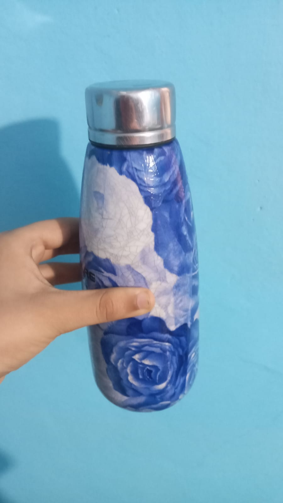
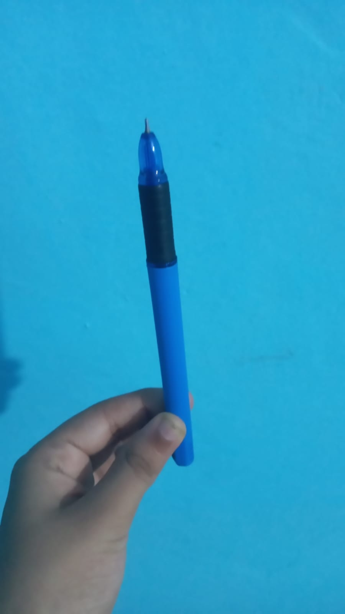
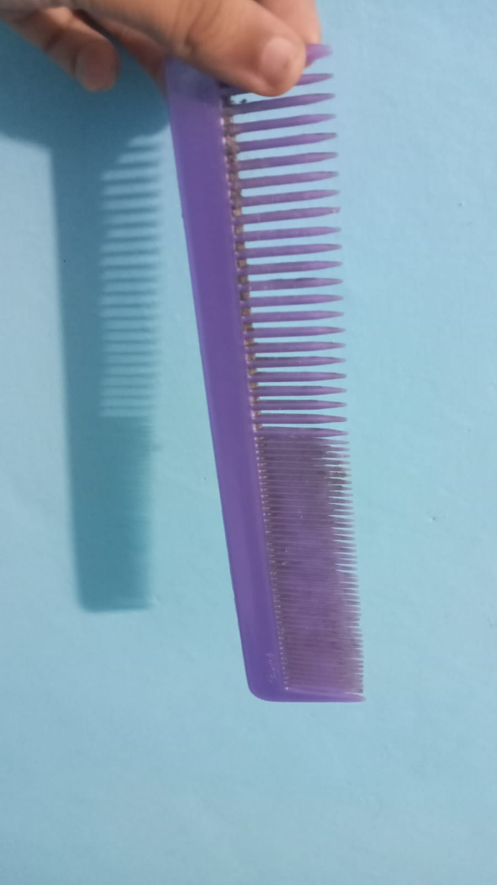
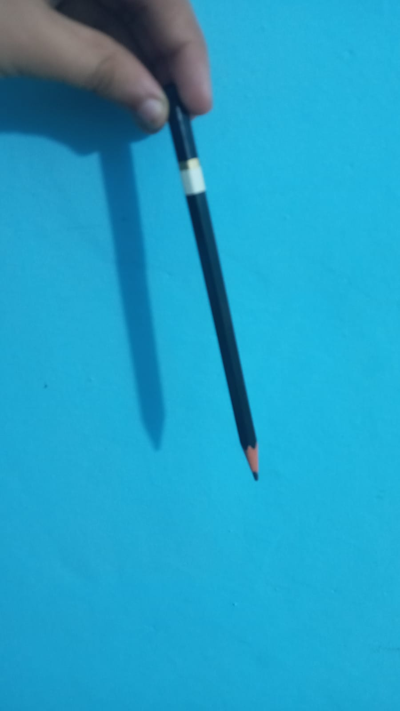
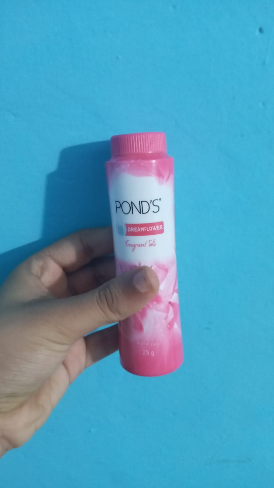
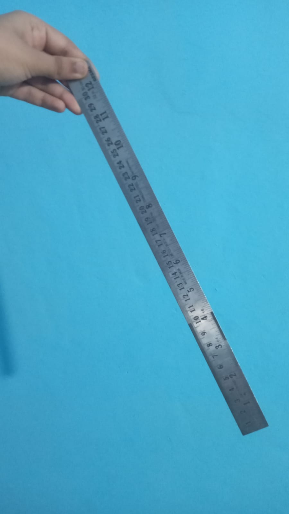
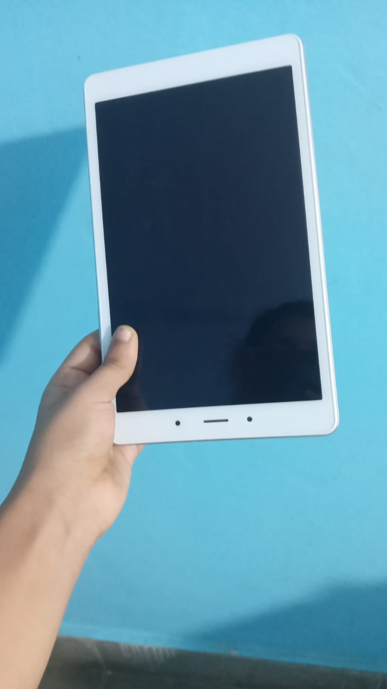

CASE STUDY BETWEEN GOOGLE LENS AND MOBILENET
GOOGLE LENSVS
Mobilenet
- Test image - 
- Test image - 
- Test image - 
- Test image - 
-
Test image -

- Test image - 
- Test image - 
- Test image - 
Output on Google Lens - Water bottle
Output on Mobile Net - Beer bottle
Result -
Google lens is more accurate than mobilenet
Output on Google Lens - Ball Pen
Output on Mobile Net - pen
Result -
Google lens is more accurate than mobilenet
Output on Google Lens - hair comb
Output on Mobile Net - cactus
Result -
Google lens is more accurate than mobilenet
Output on Google Lens - Pencil
Output on Mobile Net - Stick
Result -
Google lens is more accurate than mobilenet
Output on Google Lens - Rubix cube
Output on Mobile Net - ball
Result -
Google lens is more accurate than mobilenet
Output on Google Lens - Ponds fragrant body powder
Output on Mobile Net - can
Result -
Google lens is more accurate than mobilenet
Output on Google Lens - steel ruler
Output on Mobile Net - Pencil
Result -
Google lens is more accurate than mobilenet
Output on Google Lens - Samsung galaxy tab
Output on Mobile Net - Box
Result -
Google lens is more accurate than mobilenet
Tested 8 images.
Google lens has predicted them all correctly.
But mobile net has not predicted them correctly.
Thus, Google lens is more accurate than mobile net.
Developed by - Kripa